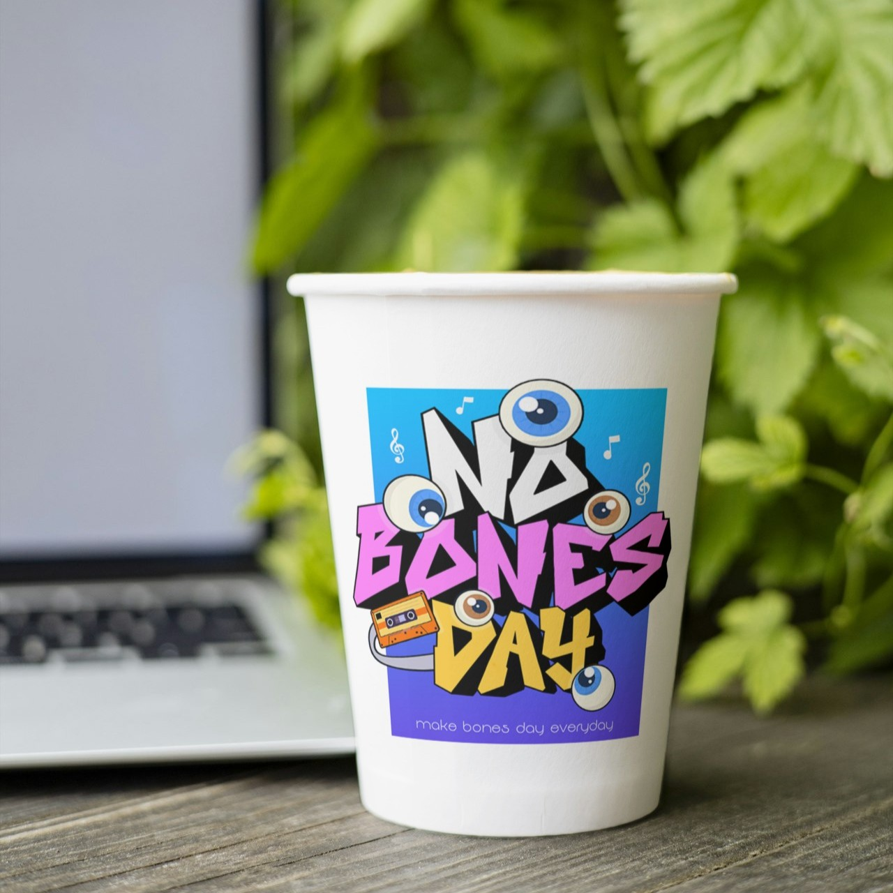
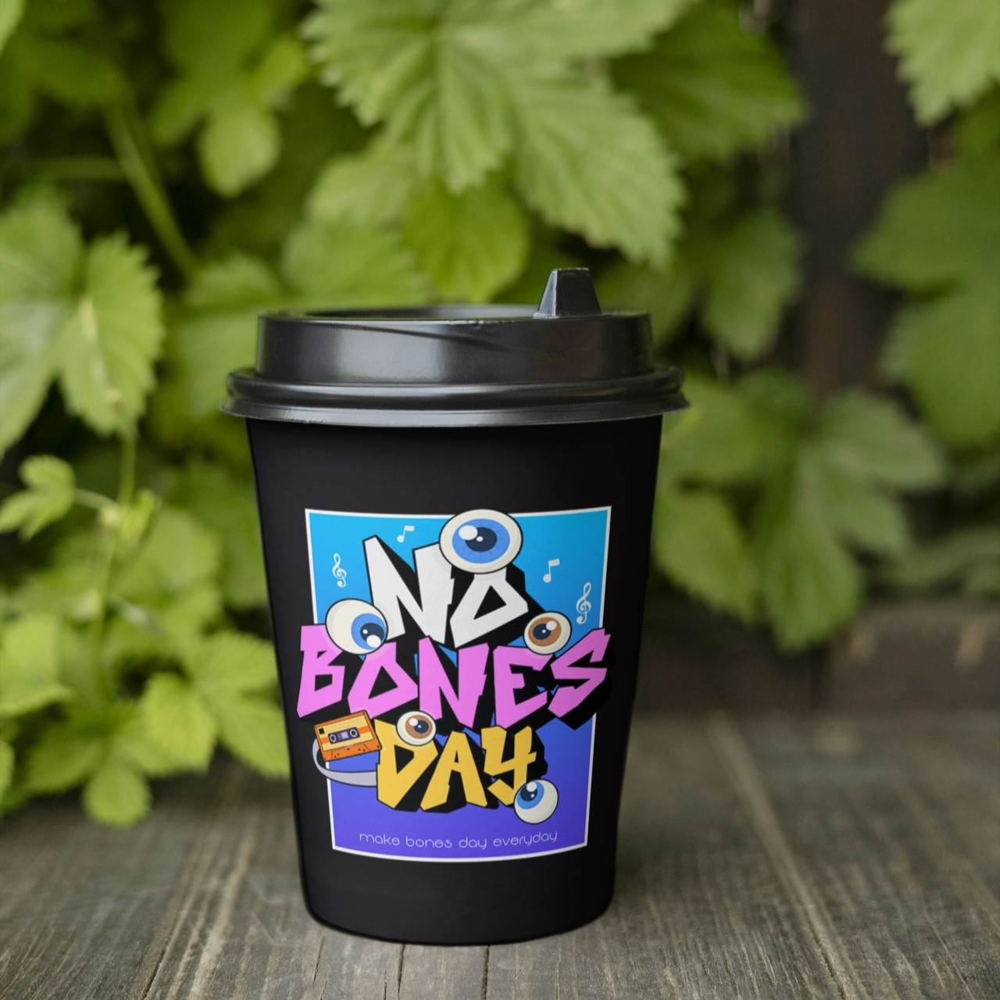

The Art of Brewing Coffee
Coffee brewing is more than just a daily habit—it is an art. The right balance of beans, grind size,
water temperature, and brewing method can completely change the taste of your cup. From pour-over to
espresso, each technique highlights unique flavors and aromas. For true coffee lovers, experimenting
with different brewing styles is the key to discovering their perfect cup.
Health Benefits of Tea
For centuries, tea has been valued not only for its comforting taste but also for its health benefits.
Green tea is rich in antioxidants that may support heart health, while black tea is known to improve
alertness and focus. Herbal teas, such as chamomile and peppermint, offer relaxation and aid digestion.
Whether hot or iced, tea is a natural way to refresh the body and calm the mind.


Coffee Culture Around the World
Coffee culture is a global phenomenon that brings people together in different ways. In Italy, espresso
is a quick shot enjoyed at the bar; in Turkey, coffee is strong, thick, and often shared with friends;
in Thailand, iced coffee is sweet and creamy, perfect for hot weather. Exploring coffee traditions
across countries reveals how a simple drink can reflect culture, lifestyle, and community.